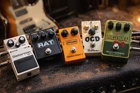
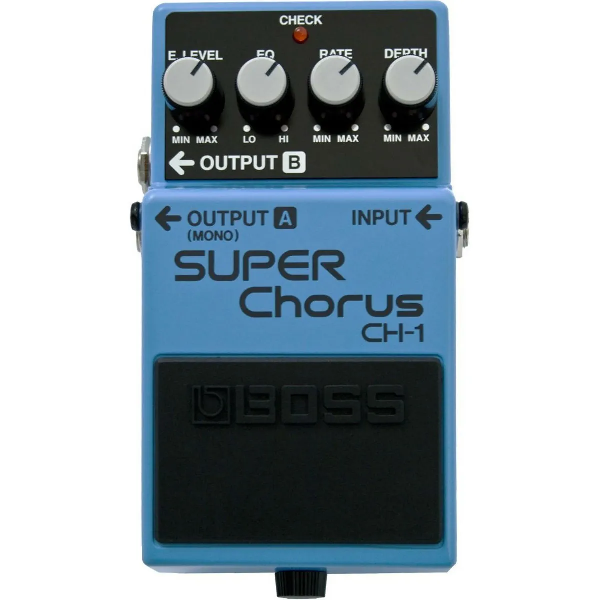
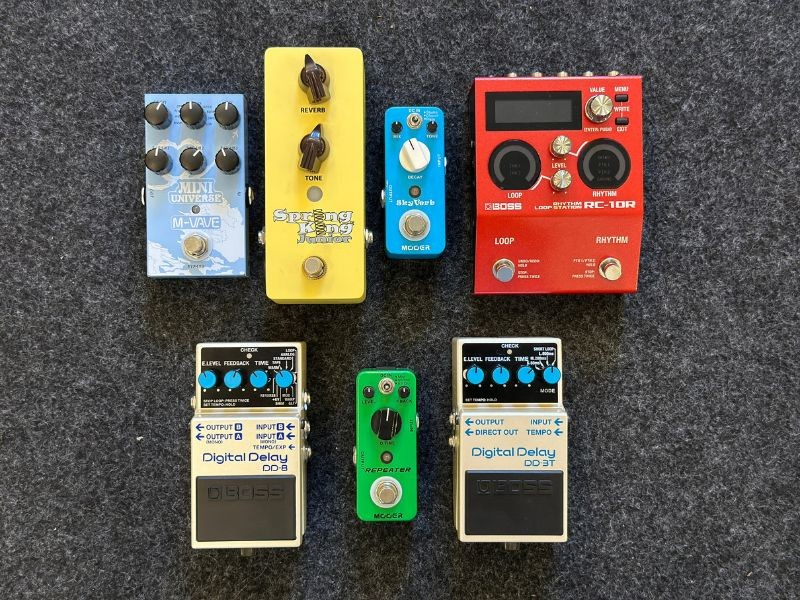
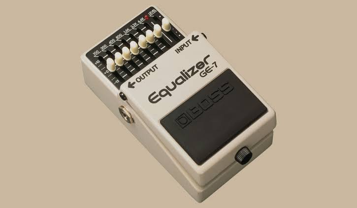

Se você está começando a explorar o mundo dos pedais de guitarra, este site é o lugar certo para você. Ele traz apenas o que é realmente essencial saber antes de comprar seu pedal, sem complicações ou informações desnecessárias. Desde os tipos de efeitos, como overdrive, delay e chorus, até dicas sobre combinações e ajustes básicos, você vai encontrar tudo de forma clara e objetiva. Perfeito para guitarristas que querem fazer escolhas conscientes e montar seu som sem perder tempo com detalhes confusos.

Os pedais de ganho são responsáveis principalmente por aumentar a saturação do sinal da guitarra. Eles podem transformar um som limpo em um timbre levemente saturado ou chegar a sons extremamente pesados. Essa categoria é fundamental na história da guitarra elétrica e está diretamente ligada à evolução do rock. Conforme os guitarristas buscavam sons cada vez mais fortes e distorcidos, surgiram diferentes circuitos para criar essas sonoridades.
O boost aumenta o nível do sinal da guitarra sem necessariamente adicionar muita distorção por conta própria. Pode ser utilizado para aumentar o volume de um solo ou para fazer o amplificador trabalhar mais forte e produzir saturação. É encontrado em praticamente todos os estilos que utilizam guitarra elétrica.
O overdrive produz uma saturação semelhante à de um amplificador valvulado sendo levado ao limite. Normalmente possui menos ganho e uma resposta mais dinâmica que uma distorção. É muito utilizado em blues, rock, indie, country e música gospel. Um dos maiores clássicos é o Ibanez Tube Screamer, que também é bastante utilizado para empurrar amplificadores e outros pedais.
A distortion oferece uma quantidade maior de saturação e geralmente produz um som mais comprimido e agressivo. Tornou-se extremamente importante com a evolução do rock e posteriormente do heavy metal. É comum em rock, hard rock, punk, grunge e metal. O Boss DS-1 é um dos exemplos mais conhecidos dessa categoria.
O fuzz possui uma sonoridade bastante característica, com uma distorção extrema e geralmente mais "rasgada" e comprimida. Os primeiros sons de fuzz surgiram de experimentos e limitações dos equipamentos da época, até que fabricantes começaram a desenvolver pedais especificamente para reproduzir esse efeito. Jimi Hendrix ajudou a tornar o fuzz mundialmente conhecido. É bastante utilizado em rock psicodélico, garage rock, blues rock, stoner rock e alternative rock.

Os pedais de modulação alteram determinadas características do sinal para criar sensação de movimento, profundidade ou variação no timbre. Eles ficaram especialmente populares a partir das décadas de 1970 e 1980 e se tornaram parte importante de vários estilos.
O chorus cria a sensação de que existem várias guitarras tocando ao mesmo tempo. Ele adiciona pequenas variações de tempo e afinação ao sinal original. É bastante associado aos timbres dos anos 1980. Muito utilizado em pop, rock, new wave, funk e indie.
O flanger também cria movimento no timbre, mas geralmente possui uma sonoridade mais intensa e metálica. Pode ser encontrado em rock, hard rock, metal, pop e música experimental.
O phaser cria uma sensação de movimento no som, produzindo uma espécie de varredura de frequências. É bastante característico do rock dos anos 1970, mas também aparece em funk, pop e música psicodélica
O tremolo altera o volume do sinal de maneira repetitiva, criando uma pulsação. Apesar de também aparecer em pedais, o efeito ficou muito conhecido por estar presente em amplificadores antigos. É bastante utilizado em surf rock, blues, rock e indie.

Os efeitos de espaço e ambiência são utilizados para fazer a guitarra parecer estar em determinado ambiente ou para criar repetições e profundidade. Eles são especialmente importantes para criar sons mais amplos e atmosféricos.
O delay repete o som da guitarra depois de determinado período de tempo. Os primeiros sistemas de delay utilizavam fita magnética. Com o avanço da tecnologia, surgiram equipamentos menores e posteriormente os pedais. Pode ser utilizado de maneira discreta ou com várias repetições. É muito comum em rock, indie, pop, ambient, gospel e música experimental.
O reverb simula as reflexões naturais do som em um ambiente. Uma guitarra sem reverb pode parecer muito seca, enquanto uma pequena quantidade pode fazer o instrumento parecer estar sendo tocado em uma sala. O efeito já era muito utilizado em amplificadores antes da popularização dos pedais. É encontrado em praticamente todos os estilos de guitarra.

Os pedais de dinâmica trabalham principalmente com a intensidade e o comportamento do sinal da guitarra. Eles podem controlar diferenças de volume, aumentar o sustain ou ajudar a manter o sinal mais consistente.
ndo maior equilíbrio ao timbre. Muito usado em country, funk, pop e rock.
Permite ajustar frequências graves, médias e agudas, ajudando a moldar o timbre e destacar a guitarra na mixagem.
Reduz ruídos indesejados gerados por altos níveis de ganho, sendo especialmente útil para músicos de rock e metal.
é um pedal de efeito que muda a altura das notas que você toca (o “pitch” = tom/agudo ou grave do som).
Adiciona notas uma ou mais oitavas acima ou abaixo da nota original, enriquecendo o som da guitarra.
Altera a afinação das notas em intervalos definidos, possibilitando novas sonoridades sem a necessidade de trocar a afinação do instrumento.
Cria harmonias automáticas com base na nota tocada, sendo muito utilizado em solos e arranjos mais elaborados.